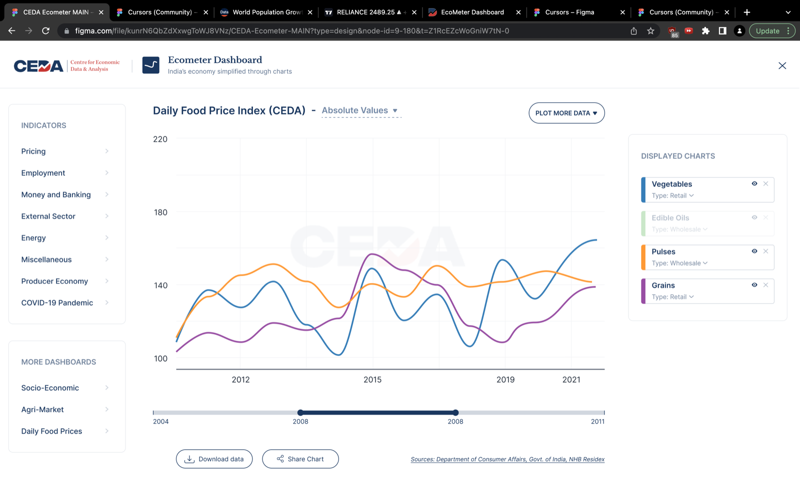
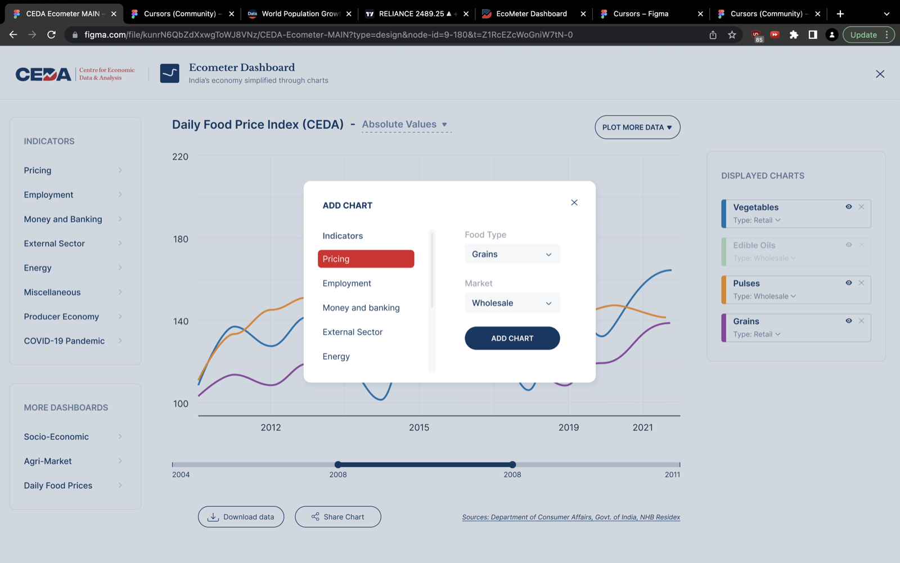
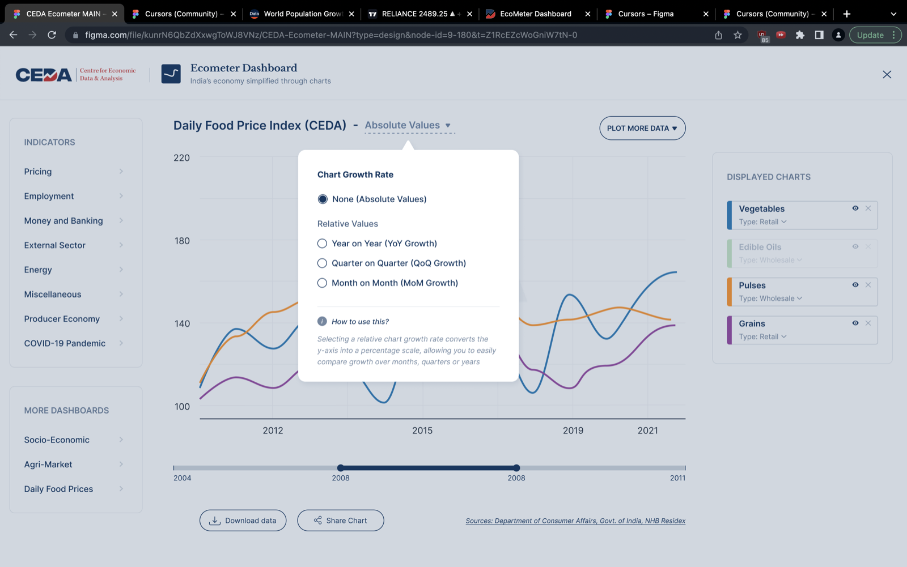
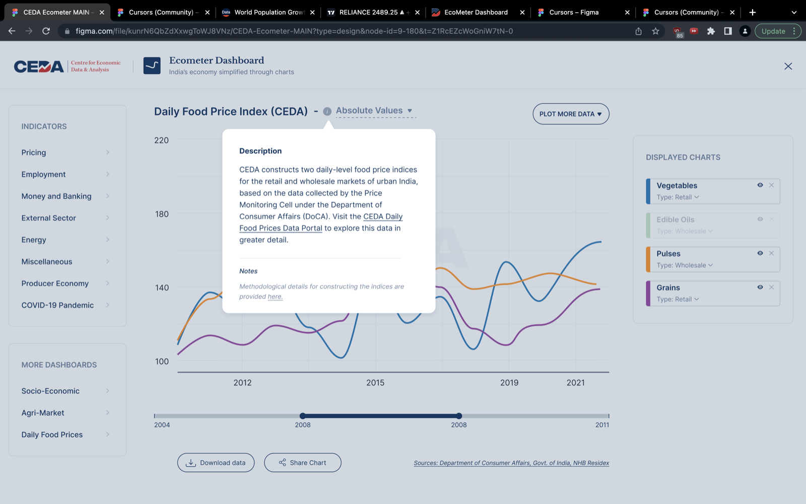
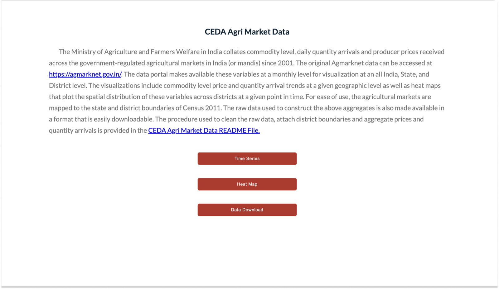
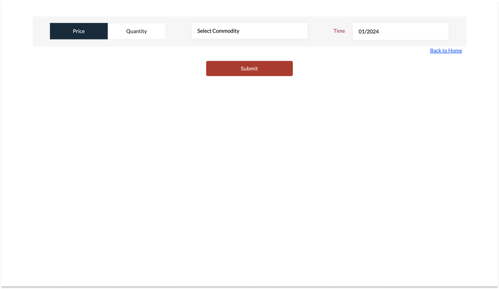
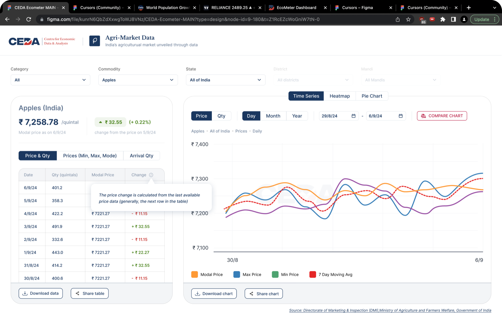
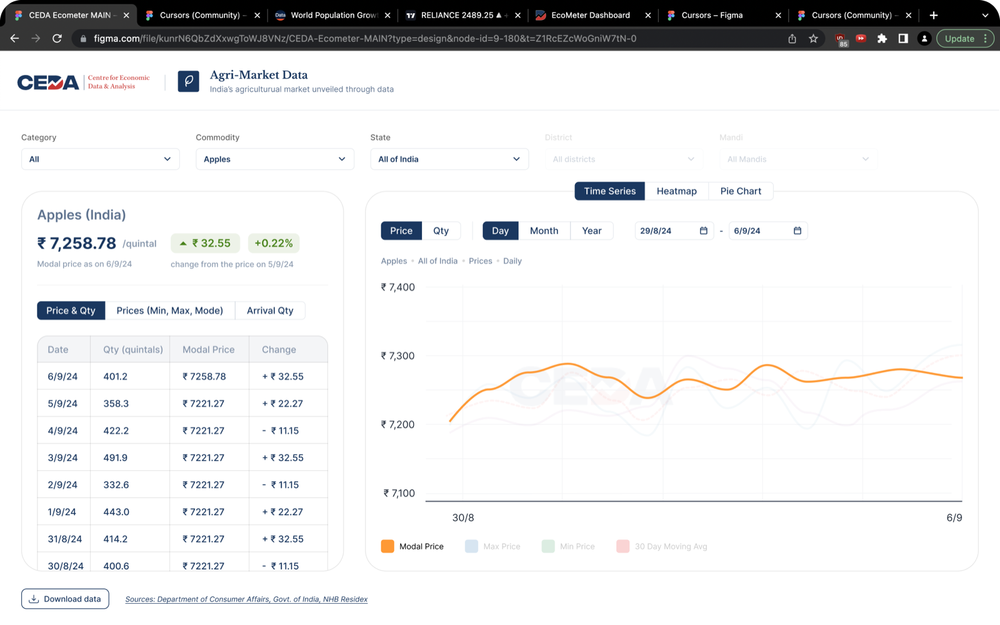
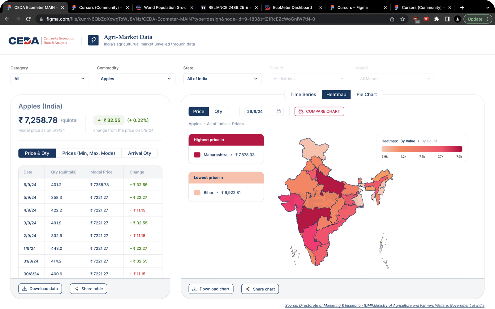
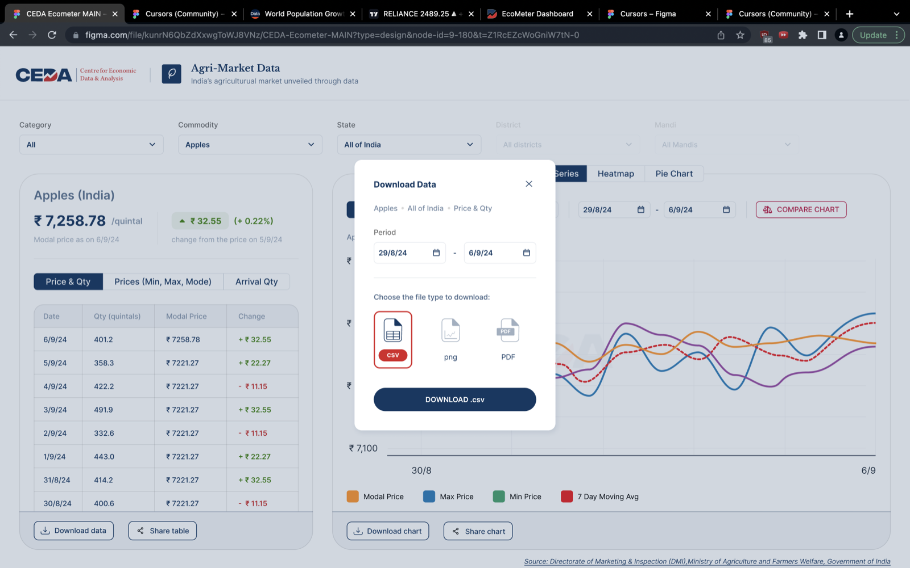

Case study · Economic data · 2022-2023
Economic Dashboards Redesign: Ecometer & Agrimarket
Redesigned two economic dashboards for the Center for Economic Data & Analysis.
🦚 About the project
The Center for Economic Development (CEDA) at Ashoka University works on socio-economic data and facilitates informed discourse on key economic and social developments in India.
They wanted two of their economic dashboards redesigned for:
- Reducing complexity and making them more intuitive
- Making the visual language consistent across their various dashboards
- Making them visually attractive, clean, and modern
- Acquiring a new audience by facilitating the sharing of charts on social media
I was responsible for the complete end-to-end designs. Click any image to see it full size.
🏝️ The Dashboards
Ecometer
CEDA’s portal for high-frequency economic data.




Agrimarket
CEDA’s portal for India’s high-frequency agricultural market data. This is how the Agrimarket portal looked previously:


After the redesign:




“We hired Priyank to redesign our dated suite of economic dashboards. And he did an excellent job. The redesigned dashboards are a treat to interact with. We will definitely work with him again.”Akshi ChawlaEx-Director, CEDA, Ashoka University
This was part of an overall redesign of three CEDA dashboards. The flagship one is documented in the SEDP case study.
Fin.